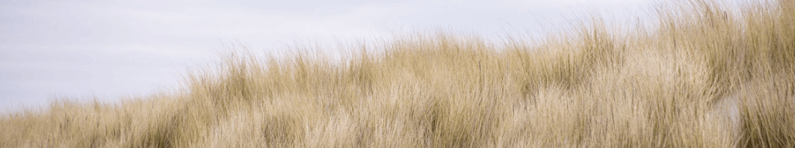

EXPLORD
EXPLORD
A Travelers' Blog
EXPLORDA Travelers' Blog
Published Yesterday, 21:23 Written by Daumantas
The Curonian Spit stretches from the Sambian Peninsula on the south to its northern tip next to a narrow strait, across which is the port city of Klaipėda on the mainland of Lithuania. The northern 52 km long stretch of the Curonian Spit peninsula belongs to Lithuania, while the rest is part of the Kaliningrad Oblast, Russia. The width of the spit varies from a minimum of 400 m in Russia (near the village of Lesnoy) to a maximum of 3,800 m in Lithuania (just north of Nida).
The Curonian Spit was formed about 3rd millennium BC. A glacial moraine served as its foundation; winds and sea currents later contributed enough sand to raise and keep the formation above sea level.

I am a 19-year-old student from Lithuania, Klaipeda, currently studying Digital Interaction design in Dundee, Scotland. I am highly passionate about User Interface design. Recently, I have started working with UI animations / (micro-) interactions. I am we


My website
daumantasbanys.lt